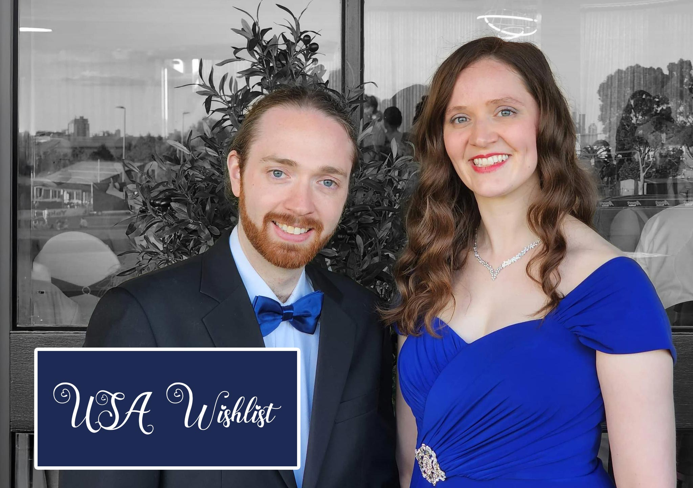

REGISTRY
Our Registry
- 
-
Thank you for visiting our registry! If you would like to celebrate our special day with a contribution, we would be truly touched. But please remember, your presence at our wedding is the greatest gift of all!
Instead of physical presents (as we’ve already set up our home), we’d love your help in making our honeymoon to the United States even more special.
If you'd like to give a gift in person, we will have a Wishing Well at Ballara where you can leave your contribution.
If you prefer digital, our USA Wishlist Page lets you browse a list of experiences and attractions we're excited to visit. These are grouped into set amounts so you can direct your donation toward a specific activity. Or, if you prefer, you’re welcome to donate any amount of your choosing. We'll be both stoked and touched either way.
If you kindly choose to contribute, we’ll be sure to take photos to share with you and look forward to reminiscing about the experience together when we return.
M & A
10.07.2025